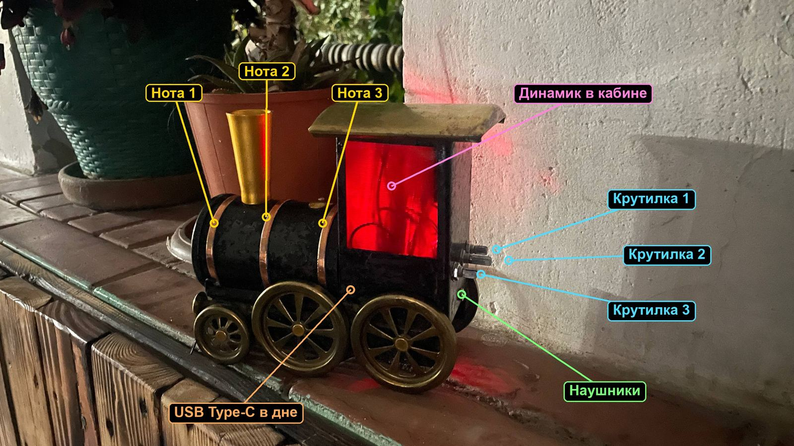

Игрушечный паровоз, который звенит колоколами. Коснись сенсора на корпусе — раздаётся удар, и нота сама затухает за две с половиной секунды. Три ручки меняют высоту, материал колокола и яркость удара.

Внутри работает FM-синтез, тот же приём, что в синтезаторах Yamaha DX7. Один синус качает фазу другого. Когда их частоты в целом отношении (1, 2, 3), звук получается гладким, как электропиано. Когда в дробном (1.4, 2.76, 6.3), появляются негармоничные обертоны, и выходит колокол, колокольчик или гонг.
Яркость удара гаснет быстрее громкости: в начале звонкий металлический «дзынь», в хвосте мягкий тон. Так ведут себя настоящие колокола.
Если в тишине слышен тихий плавающий свист около 1–2 кГц, это ультразвук ШИМ с выхода D9 перегружает вход усилителя. Ни сенсоры, ни ручки тут ни при чём, мы проверили каждый вход по очереди.
fm_bells с файлом fm_bells.ino.fm_bells.ino, выбрать плату Arduino Nano, процессор ATmega328P (Old Bootloader) и порт.Архив с папкой для Arduino IDE, 205 строк с подробными комментариями на русском. Код лежит и на GitHub: sketches/fm_bells.ino.
Загружаю…